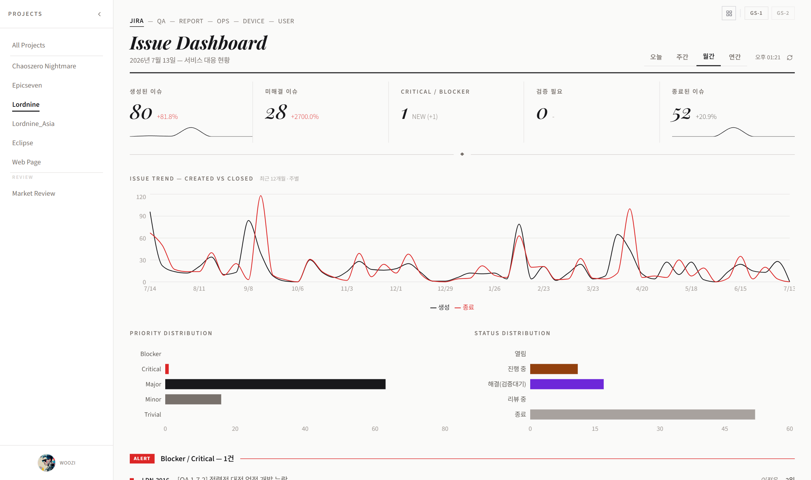
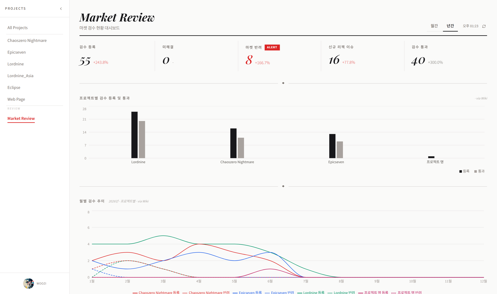
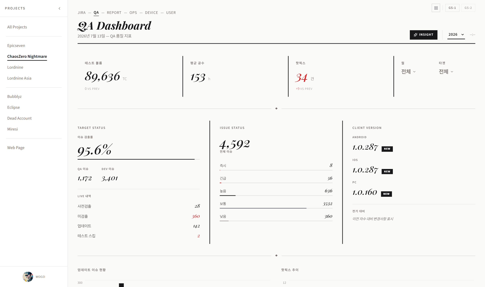
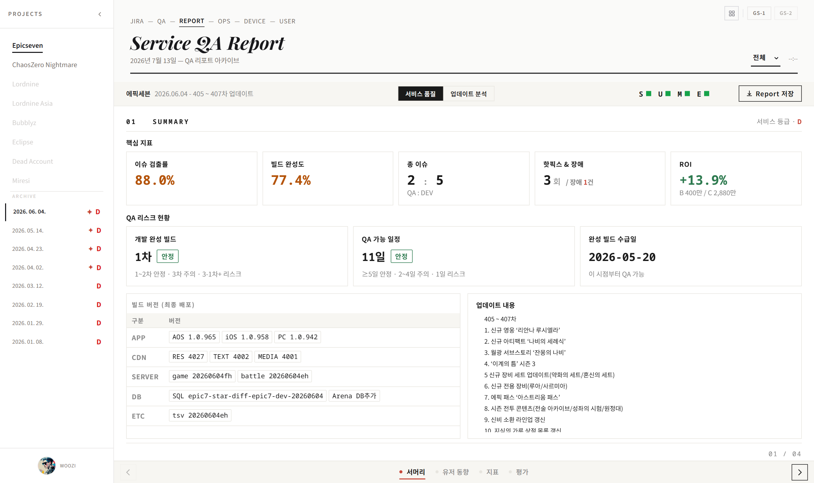
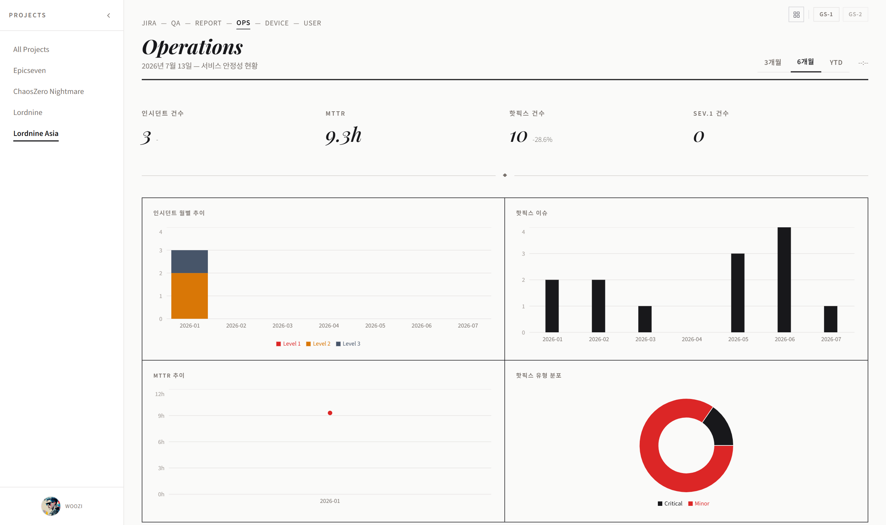
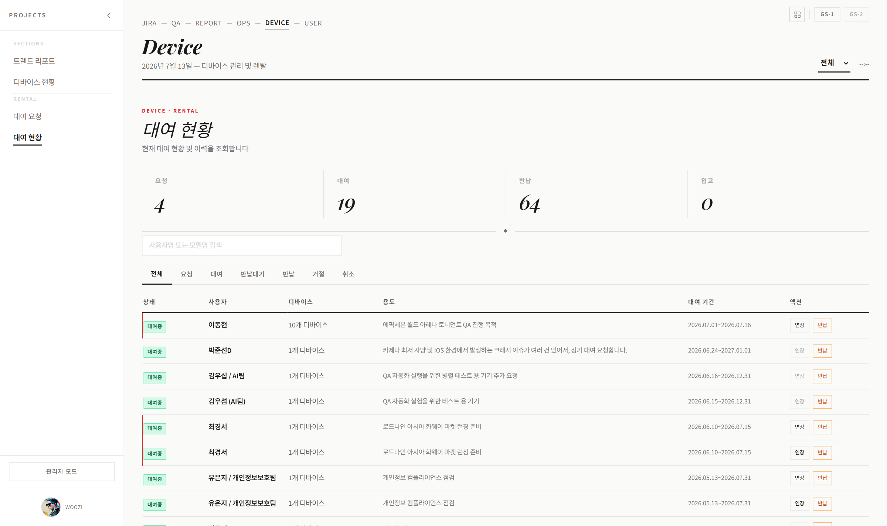
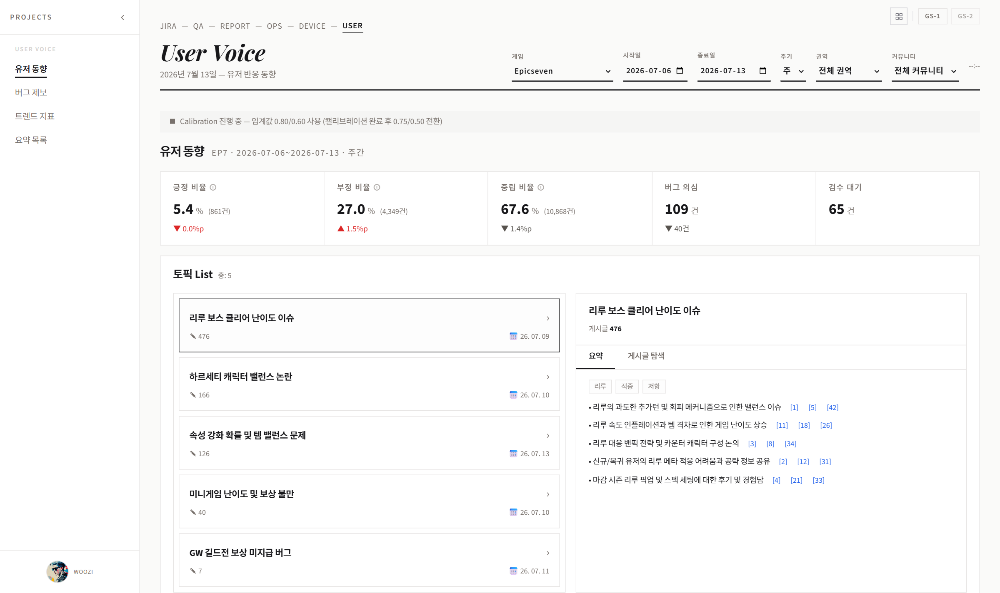

QA-Dashboard.
사용 가이드 · USER GUIDE
VOL. 01 · 2026.07
서비스 품질을
한눈에
JIRA 이슈 현황부터 QA 산출물 지표, 운영 인시던트, 유저 반응 동향까지 — QA-Dashboard는 여러 데이터 소스를 하나의 화면에서 조회하는 사내 QA 통합 대시보드입니다. 로그인 없이 누구나 바로 열람할 수 있고, 일부 관리 화면만 별도 PIN으로 보호됩니다. 이 가이드는 처음 이용하는 분도 화면을 따라가며 바로 시작할 수 있도록 구성했습니다.
▸ Tabs
6
상단 탭 (+ 숨김 1개, GS-1 전용)
▸ Projects
6
게임 프로젝트 (Epicseven · ChaosZero Nightmare 등)
▸ Data Sources
7
데이터 소스 종류 (JIRA·QA·REPORT·OPS·DEVICE·QUEST·USER)
→ 오른쪽으로 넘겨서 목차부터 확인해 보세요. 키보드 ← → 로도 이동할 수 있어요.
QA-Dashboard.
CONTENTS
02 / 14
목차 Table of Contents
QA-Dashboard.
INTRODUCTION
03 / 14
QA-Dashboard란? Core Concepts
4가지 축으로 데이터를 모아 보여주는 조회 전용 대시보드입니다. 로그인이 필요 없어요.
No. 01
JIRA 이슈 추적
게임별 프로젝트의 JIRA 이슈(생성/해결/우선순위/상태)를 기간별로 집계해 보여줍니다. 마켓 심사 관련 이슈(Market Review)는 별도로 분리되어 있습니다.
No. 02
QA 산출물 지표
테스트 볼륨, 핫픽스, 이슈 검출률 등 QA팀의 테스트 진행 현황을 차수/월 단위로 확인합니다. 업데이트 리포트와 서비스 품질 리포트도 아카이브로 제공됩니다.
No. 03
운영 지표
서비스 장애(인시던트)와 핫픽스 배포 이력을 심각도·복구 시간(MTTR) 기준으로 추적합니다. 디바이스 대여 현황도 함께 관리됩니다.
No. 04
유저 동향
커뮤니티·SNS 게시글을 크롤링해 긍정/부정/중립/버그 제보로 분류한 유저 반응 데이터를 게임·주기·권역별로 조회합니다.
로그인 없이 바로 이용 가능 — QA-Dashboard는 페이지에 접속하면 별도 인증 절차 없이 바로 화면이 표시됩니다. 단, 디바이스 대여 승인·유저 동향 검수 큐 등 일부 관리 전용 화면만 PIN으로 보호되어 있습니다.
QA-Dashboard.
LAYOUT
04 / 14
화면 구조 Common Pattern
탭이 바뀌어도 조작 방식은 대부분 동일합니다. 아래 3단 구조만 기억하면 어느 탭이든 쉽게 다룰 수 있어요.
01
상단 탭
화면 최상단에 JIRA / QA / REPORT / OPS / DEVICE / USER 탭이 나열됩니다. 클릭하면 그 자리에서 화면 내용만 바뀌며(페이지 이동 없음), 새로고침하면 다시 JIRA 탭으로 돌아갑니다.
02
좌측 프로젝트 사이드바
탭마다 조회 대상 게임(프로젝트) 목록이 세로로 나열됩니다. 클릭해서 선택하며, 접기/펼치기(chevron 아이콘)도 가능합니다. 접힌 상태에서는 약어(EP7, GCZ 등)로 표시됩니다.
03
상단 기간 필터
탭별로 오늘/주간/월간/연간, 또는 3개월/6개월/YTD 같은 기간 탭이 있어 조회 범위를 좁힐 수 있습니다. 탭에 따라 필터 구성이 조금씩 달라요.
① 상단 탭 선택→
② 좌측에서 게임 선택→
③ 기간/추가 필터로 좁히기→
④ 카드·차트·테이블 확인
우상단 고정 요소 — 모든 탭에서 우상단에 서비스 이동 런처(⊞), GS-1 버튼, GS-2 버튼(준비 중, 비활성)이 항상 표시됩니다. GS-1은 비밀번호 입력 시 숨겨진 QUEST 탭이 나타나는 진입점입니다.
JIRA 탭 Issue Tracking


위: 요약 카드 · 이슈 추이 · 분포 차트 · 아래: 이슈 테이블(검색·필터·페이지네이션)
화면 구성 (위→아래)
- 요약 카드 5개 — 생성된 이슈 / 미해결 이슈 / Critical·Blocker / 검증 필요 / 종료된 이슈 (전주·전월 대비 증감 배지)
- 이슈 추이 차트 + 우선순위·상태별 분포 2분할 (막대 클릭 시 하단 테이블 드릴다운)
- Blocker/Critical 알림 패널 — 없으면 "현재 Blocker / Critical 이슈가 없습니다" 안내
- 이슈 테이블 — 검색/필터/페이지네이션, 행 클릭 시 JIRA 원문 새 탭으로 이동
조작 순서
- ① 좌측에서 게임 선택(All Projects / Epicseven / ChaosZero Nightmare 등)
- ② 상단 기간 탭(오늘/주간/월간/연간) 선택
- ③ 필요 시 이슈 테이블 필터·검색으로 좁히기
Market Review는 여기 없어요 — 좌측 목록 맨 아래 "Market Review"는 클릭하면 화면 전체가 다른 화면으로 전환됩니다. 자세한 내용은 다음 페이지를 확인하세요.
QA-Dashboard.
MARKET REVIEW
06 / 14
Market Review App Store Review
JIRA 탭 좌측 목록의 "Review" 섹션에서 진입하는, 마켓(스토어) 심사 전용 별도 화면입니다.

Market Review 화면 — 자체 헤더와 기간 탭(월간/년간)을 갖춘 완전히 다른 레이아웃
진입 방법 (헷갈리기 쉬운 점)
- JIRA 탭 좌측 사이드바에서 "Market Review" 클릭 → 화면 전체가 전환됨
- 일반 프로젝트 목록·사이드바가 사라지고, 자체 헤더(타이틀 + 기간 탭 + 새로고침 버튼)가 나타남
- 기간 필터는 월간/년간 2종만 제공(다른 탭의 4종 필터와 다름)
주요 요소
- 요약 카드 5개 — 검수 등록 / 미해결(클릭 시 목록 패널 슬라이드) / 마켓 반려 / 신규 리젝 이슈 / 검수 통과
- 프로젝트별 검수 등록·통과, 반려 현황, 게임·구성요소별 이슈 분포 차트
- 이슈 테이블 — 게임/구성요소/상태 필터 + 검색
주의 — Market Review는 "All Projects"(총합 대시보드)에는 포함되지 않는 독립 카테고리입니다. 목록으로 돌아가려면 좌측에서 다른 게임 프로젝트를 다시 선택하세요.
QA 탭 Test Volume · Hotfix · Detection Rate


위: 헤더 메트릭 · Stat Block · 아래: 업데이트/핫픽스 등 차트 영역
화면 구성
- 헤더 메트릭 — 테스트 볼륨 / 평균 공수 / 핫픽스(0건 초과 시 경고)
- Stat Block 3분할 — 이슈 검출률·QA/DEV 이슈, 전체 이슈·우선순위 분포, 클라이언트 버전(Android/iOS/PC)
- 차트 영역 — 업데이트 이슈·핫픽스, 앱 패치·테스트 볼륨, 커뮤니티 이슈(AI Insight 연동)
필터
- 연도 드롭다운(2025 / 2026 / 전체)
- 월 필터, 타겟(차수) 필터 — 다중 선택 가능하나 서로 배타적(하나 선택 시 다른 하나 자동 해제)
- ✨ AI Insight 버튼 — 커스텀 타겟 선택 시에만 활성화
참고 — Web Page 프로젝트를 선택하면 차트 구성이 완전히 바뀝니다(커뮤니티/AI 인사이트 섹션 없음, 일감 이슈 현황 위주). 게임마다 보이는 화면이 다를 수 있어요.
QA-Dashboard.
REPORT
08 / 14
REPORT 탭 Service Quality · Update Analysis

서비스 품질 리포트 / 업데이트 분석 리포트를 세그먼트 탭으로 전환합니다.
이용 가능 게임 — 현재 2종만 제공
- 활성(클릭 가능): Epicseven, ChaosZero Nightmare
- 나머지 프로젝트는 회색으로 표시되며 클릭 불가
조작 순서
- ① 좌측에서 게임 클릭(2종만 가능) → ② 하단 Archive 목록에서 날짜 클릭
- ③ 헤더 가운데 "서비스 품질" / "업데이트 분석" 세그먼트로 전환(데이터 없는 쪽은 비활성)
- ④ 필요 시 "Report 저장" 버튼으로 HTML 파일 다운로드
완성도 지시자 — 헤더 우측 점 표시(품질 리포트 4개 / 분석 리포트 5개)로 데이터 완성도를 확인할 수 있습니다. 녹색=완성, 주황=일부 누락, 빨강=핵심 데이터 미충족. 정합성 검수가 완료되지 않으면 "Report 저장" 버튼이 비활성화됩니다.
OPS 탭 Incident · Hotfix

인시던트·핫픽스 요약 카드와 상관 차트, 두 개의 목록 테이블로 구성됩니다.
화면 구성
- 요약 카드 4개(2x2) — 인시던트 건수 / MTTR(평균 복구 시간) / 핫픽스 건수 / Sev.1 건수(0건 초과 시 경고)
- 2x2 차트 — 인시던트 월별 추이(Level1/2/3), 핫픽스 이슈, MTTR 추이, 핫픽스 유형 분포
- 인시던트-핫픽스 상관 차트(전폭)
- 듀얼 테이블 — 인시던트 목록(Level 필터), 핫픽스 목록(Severity 필터 + 검색)
기간 필터
참고 — 해당 기간에 인시던트가 없으면 "이 기간 인시던트 없음 — 양호한 서비스 상태" 안내가 표시됩니다. 각 요약 카드 라벨에 마우스를 올리면 용어 설명 툴팁이 뜹니다.
QA-Dashboard.
DEVICE
10 / 14
DEVICE 탭 Inventory · Rental

테스트용 디바이스 재고와 대여 신청/현황을 관리하는 화면입니다.
좌측 섹션 구성
- Sections — 트렌드 리포트 / 디바이스 현황
- Rental — 대여 요청 / 대여 현황
- (관리자 모드 활성 시) 요청 관리 — 대여 승인/거절
조작 순서
- ① 대여를 원하면 "대여 요청" 선택 → 신청서 작성 → 제출(성공 시 대여 현황으로 자동 이동)
- ② "대여 현황"에서 연도 필터로 나의 대여 이력을 확인
관리자 모드 — 좌측 사이드바 하단 "관리자 모드" 버튼 클릭 → PIN 입력 → 승인되면 "● Admin Mode"로 전환되며 "요청 관리" 메뉴가 나타납니다. 일반 사용자는 대여 신청·조회만 가능합니다.
QA-Dashboard.
USER VOICE
11 / 14
USER 탭 User Voice


위: 필터 영역과 동향 요약 · 아래: 토픽 리스트 및 요약 상세
좌측 서브메뉴
- 유저 동향 — 긍정/부정/중립/버그 의심 반응 집계
- 버그 제보 — 유저가 언급한 버그성 게시글 모음
- 트렌드 지표 — 시계열 추이
- 요약 목록 — 언어권/커뮤니티/주제/게시글 수/부정 비율/날짜 집계
필터 (좌→우 순서)
- 게임 → 시작일/종료일(기본: 어제~오늘) → 주기(일/주/월, 선택 시 시작일 자동 재계산) → 권역(전체/한국/글로벌/일본/대만/동남아) → 커뮤니티(권역에 종속, 권역 바꾸면 초기화됨)
토픽 리스트+요약 — 유저 동향 화면은 게시글을 토픽 단위로 묶어 리스트로 보여주고, 각 토픽을 펼치면 요약과 대표 게시글을 확인할 수 있습니다. 데이터가 60분 이상 갱신되지 않으면 화면 상단에 경고 배너가 표시됩니다.
QA-Dashboard.
DATA SOURCES
12 / 14
데이터 소스 사전 Where the numbers come from
각 탭의 숫자가 어디서 오는지 알아두면 데이터를 더 정확하게 해석할 수 있어요.
| 탭 | 데이터 출처 |
|---|
| JIRA | 사내 JIRA 이슈 트래커에서 게임별 이슈(생성/해결/우선순위/상태)를 주기적으로 수집·집계. Market Review는 마켓 심사 관련 이슈만 별도 집계 |
| QA | QA 테스트 진행 현황(테스트 볼륨, 검출률, 핫픽스, 클라이언트 버전 등)을 담은 내부 QA 관리 데이터. AI Insight는 이 데이터를 기반으로 한 AI 요약 분석 |
| REPORT | 업데이트(차수)별로 축적된 서비스 품질 리포트(등급 A~D)와 업데이트 분석 리포트(참여/가챠/콘텐츠) 아카이브 |
| OPS | 서비스 장애(인시던트) 및 핫픽스 배포 이력 — 심각도, 복구 시간(MTTR), 발생 추이 |
| DEVICE | 사내 테스트용 디바이스 재고 현황 및 대여 신청/승인 워크플로우 |
| QUEST (GS-1 전용) | 길드/에피소드/멤버 등 운영 콘텐츠 관리용 자체 게시판 형태 데이터 |
| USER | 커뮤니티·SNS 게시글을 크롤링해 언어권·권역별로 집계한 유저 반응 데이터. 감정분석/토픽 추출 결과 포함 |
업데이트 주기 — 각 데이터는 실시간이 아니라 주기적으로 수집·집계됩니다. 최신 이슈나 게시글이 화면에 바로 나타나지 않을 수 있으니, 급한 확인은 원본 시스템(JIRA 등)도 함께 참고하세요.
FAQ 자주 헷갈리는 것들
Market Review를 클릭했더니 화면이 완전히 바뀌었어요. 다시 돌아가려면?
Market Review는 JIRA 탭 안에서 진입하는 별도 화면입니다. 좌측 사이드바가 사라진 것처럼 보이지만, 다른 게임 프로젝트를 다시 클릭하면 원래 JIRA 화면으로 돌아갑니다.
DEV 환경과 PROD 환경 접속 주소가 다른가요?
네. 사내 개발/검증용 DEV는 localhost:5174, 실제 운영 화면인 PROD는 10.5.31.110:9100입니다. 일반적으로는 PROD 주소로 접속하시면 됩니다.
탭마다 게임 이름 표기가 조금씩 달라요.
맞습니다. 예를 들어 ChaosZero Nightmare는 탭에 따라 축약형(GCZ)이나 전체 표기로 다르게 보일 수 있습니다. 같은 게임을 가리키는 표기이니 혼동하지 않으셔도 됩니다.
"이슈 조회" 관련 탭에서 이슈를 수정할 수 있나요?
아니요. JIRA/이슈 관련 화면은 모두 조회 전용입니다. 이슈를 수정하려면 이슈 키를 클릭해 JIRA 원본 페이지로 이동해야 합니다.
PIN으로 보호되는 화면이 여러 곳인가요?
네, 서로 다른 목적의 PIN이 각각 별도로 존재합니다 — 디바이스 대여 승인(요청 관리), 유저 동향 검수 큐 등입니다. 각 화면 진입 시 해당 PIN을 별도로 입력해야 합니다.
REPORT 탭에서 다른 게임도 볼 수 있나요?
현재는 Epicseven, ChaosZero Nightmare 2종만 제공됩니다. 나머지 프로젝트는 회색으로 표시되어 선택할 수 없습니다.
USER 탭 데이터가 오래된 것 같아요.
화면 상단에 60분 이상 갱신되지 않았다는 경고 배너가 뜬다면, 수집 주기상 최신 반영이 지연된 상태입니다. 조금 기다리거나 관리자에게 문의해 주세요.
일부 화면은 안내에 없던데, 별도 관리 전용 화면이 있나요?
네. 일부 관리 전용 화면은 이 가이드에 포함하지 않았습니다. 필요하신 경우 팀 관리자에게 별도로 문의해 주세요.
End of Guide
QA-Dashboard.
궁금한 점은 팀 관리자에게 문의해 주세요.
이 가이드는 QA-Dashboard 서비스 구조 조사 결과를 바탕으로 작성되었습니다.
VOL. 01 · 2026.07 · USER GUIDE